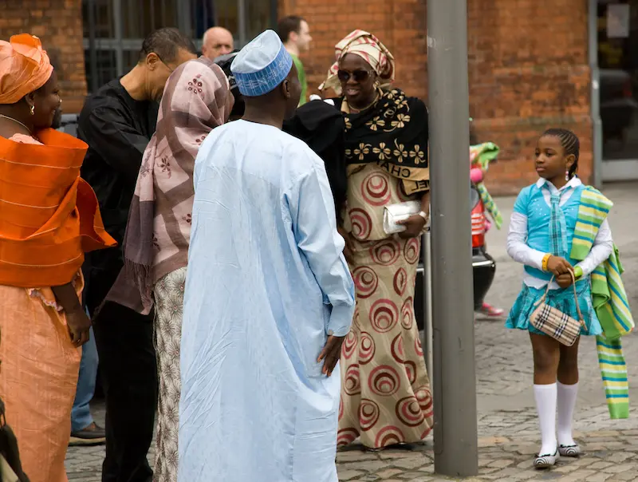
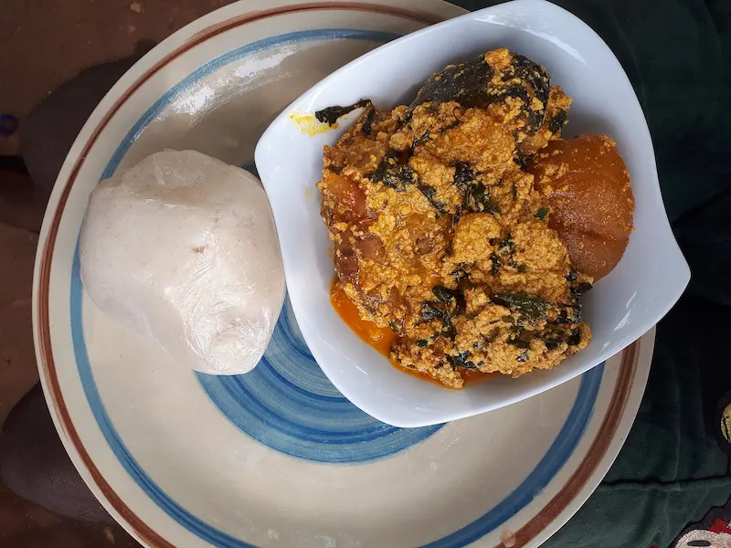

Traditional Clothing
Learn about clothing worn during important cultural ceremonies and celebrations.
Explore Traditional Igbo ClothingSoutheastern Nigeria
Explore the culture, traditions, language, values, and heritage of the Igbo people.
Explore TraditionsIgbo heritage is expressed through traditions, language, food, clothing, celebrations, family, and community values. This website introduces some of these cultural practices and explains their importance.
Learn about clothing worn during important cultural ceremonies and celebrations.
Explore Traditional Igbo Clothing
Discover celebrations that bring communities together and preserve cultural traditions.
Explore Igbo Festivals
Explore foods that form an important part of Igbo family and community life.
Explore Traditional Igbo FoodLearn how language, respect, family, community, and other values contribute to Igbo heritage.
Discover Igbo Language andFamily, respect for elders, community, hospitality, hard work, and responsibility are important themes within Igbo cultural life. Understanding these values helps visitors appreciate the traditions that connect generations.
Click the button to learn something about Igbo culture.